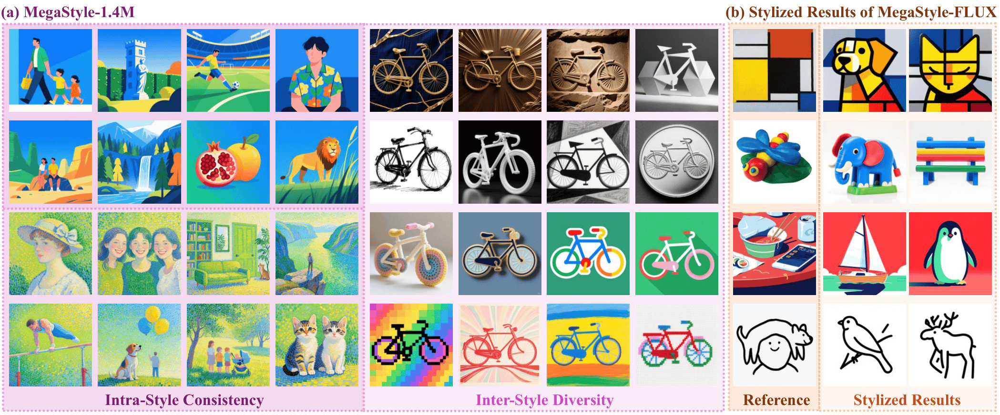
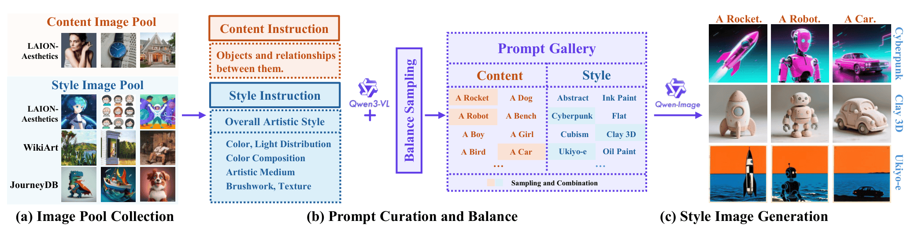

Visualizations of MegaStyle-1.4M
Each row presents the same style across different contents. MegaStyle-1.4M contains diverse, high-quality style images with strong intra-style consistency.

*Equal contribution, ‡Corresponding Authors.

Visualizations of our style dataset (a)MegaStyle-1.4M and the stylized results produced by our style transfer model (b)MegaStyle-FLUX. MegaStyle-1.4M contains style pairs that share the style but have different content (intra-style consistency), as well as a large number of diverse styles (inter-style diversity). Trained on MegaStyle-1.4M, MegaStyle-FLUX effectively captures nuances—such as color, light, texture and brushwork—across various styles.
In this paper, we introduce MegaStyle, a novel and scalable data curation pipeline that constructs an intra-style consistent, inter-style diverse and high-quality style dataset. We achieve this by leveraging the consistent text-to-image style mapping capability of current large generative models, which can generate images in the same style from a given style description. Building on this foundation, we curate a diverse and balanced prompt gallery with 170K style prompts and 400K content prompts, and generate a large-scale style dataset MegaStyle-1.4M via content–style prompt combinations. With MegaStyle-1.4M, we propose style-supervised contrastive learning to fine-tune a style encoder MegaStyle-Encoder for extracting expressive, style-specific representations, and we also train a FLUX-based style transfer model MegaStyle-FLUX. Extensive experiments demonstrate the importance of maintaining intra-style consistency, inter-style diversity and high-quality for style dataset, as well as the effectiveness of the proposed MegaStyle-1.4M.Moreover, when trained on MegaStyle-1.4M, MegaStyle-Encoder and MegaStyle-FLUX provide reliable style similarity measurement and generalizable style transfer, making a significant contribution to the style transfer community.

Overview of our data curation pipeline. We first collect style and content images from open-source datasets. Next, we apply carefully designed instructions to generate style and content prompts with Qwen3-VL, together with balance sampling. Finally, we use Qwen-Image to generate style images using content-style prompt combinations. Please note that we use simplified content and style prompts for illustrative purposes only.
Each row presents the same style across different contents. MegaStyle-1.4M contains diverse, high-quality style images with strong intra-style consistency.
Trained on MegaStyle-1.4M, MegaStyle-FLUX generates stylized images that align with the content specified by the text prompt and the style of the reference image.

We compare MegaStyle-FLUX with the SOTA style transfer methods, including DEADiff, StyleShot, Attention-Distillation (Attn-Distill), CSGO, StyleCrafter, InstantStyle and StyleAligned. MegaStyle-FLUX achieves the superior performance compared to these baseline methods.

@article{
TBA
}